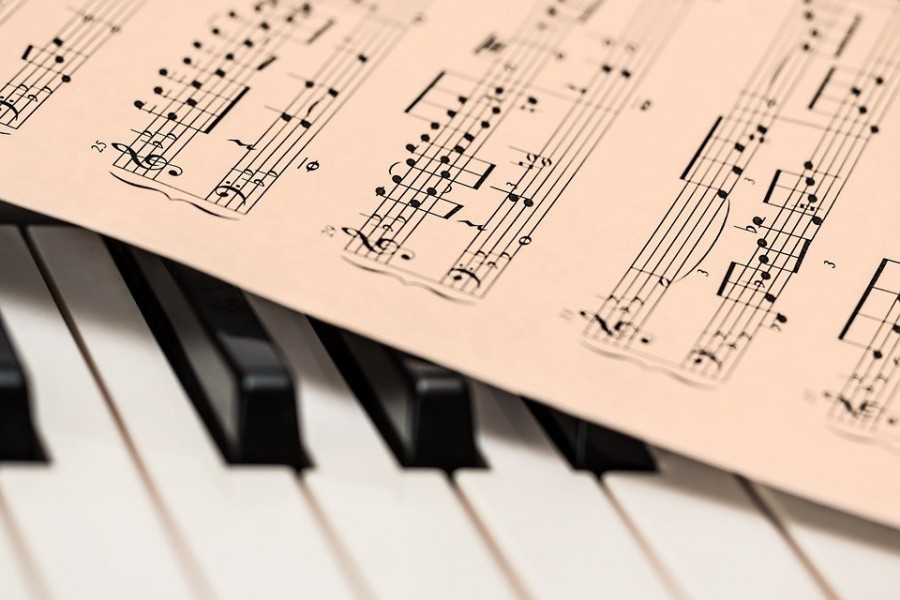

Dans cette leçon, nous allons voir qu'est-ce qu'une partition et à quoi elle sert. De plus, nous vous expliquerons les notes de musique sur une portée.
Une portée est composée de cinq barres horizontales. Celle-ci est composée principalement de boules noirs ou blanches munies de différentes queues. Ces symboles sont des notes.
On peut voir aussi qu'une portée débute par une clé noire appelée clé de sol ou clé de fa selon l'instrument que l'on joue. Aussi on peut voir que cette clé est composée d'une armure : groupe de dièse ou de bémol définissant la tonalité du morceau (nous en parlerons dans une prochaine leçon).
Mais alors pourquoi on utilise la clé de Fa dans certains instruments alors une autre clé existe déjà ?
L'usage d'une deuxième portée utilisant la clé de Fa permet à des instruments comme le piano de jouer des deux mains. On observe que les deux portées sont jouées simultanément, avec la main droite qui joue la clé de sol et la gauche la clé de Fa.

Comme vu précédemment les notes sont des boules blanches et noires munies d'une queue. Il y a sept notes différentes : do, ré, mi, fa, sol, la, si. Cependant on peut les jouer sur différentes octaves c'est à dire un registre au dessus ou en dessous. Pour lire une note, on se réfère à sa position sur la portée. On peut voir que le centre de la clé de Sol indique la hauteur du Sol sur la portée. Ainsi, nous pouvons lire la totalité des notes lorsque l'on monte la note Sol d'un cran on obtient un La. Différentes notes permettent de se repérer dans la portée, le Do qui est un trait au dessous de la portée, le Mi se situant sur la première ligne et le Sol la note de référence se trouvant à la hauteur de la clé. Ainsi nous pouvons lire la gamme de do majeur en clé de sol.
Cependant lorsque la portée est en clé de Fa, la hauteur des notes sur la portée n'est pas la même. En effet, en clé de Fa on se réfère à la note Fa se trouvant à la haiteur de la clé. Celle-ci se trouve donc sur la 4e ligne. Comme avec la clé de Sol, des notes de références nous permettent de lire plus facilement la partition : le Sol se situe sur la 1ère ligne ainsi que le Do se situant juste au dessus de la 2e ligne.
Maintenant que nous savons lire les notes d'une partition, on va apprendre à lire les rythmes écrits sur la portée.
Le rythme détermine la durée de la note. Nous allons d'abord nous intéresser aux rythmes longs :
On observe qu'un point noir avec une queue non ratachée à une autre note signifie que la note durera un temps : c'est une noire.
Une blanche par contre à les mêmes spécificités visuelles que la noire cependant la note est blanche et non remplie. Une blanche dure deux temps.
Le rythme le plus long est la ronde elle est écrite comme la blanche cependant elle n'a pas de queue et elle doit être jouée sur quatre temps.
Maintenant nous allons nous intéresser aux rythmes courts :
La croche a les mêmes aspects visuels que la noire cependant sa queue est ratachée à une autre queue, elle dure 1/2 temps.
Enfin, nous allons nous intéresser à la double croche : elle a les mêmes aspects visuels que la croche mais elle est reliée à l'autre double-croche par une double-barre. Ce rythme dure 1/4 temps.
Grâce à cette leçon, vous savez maintenant comment lire une partition dans son intégralité. Vous pouvez ainsi décrypter les notes et les rythmes d'une portée.